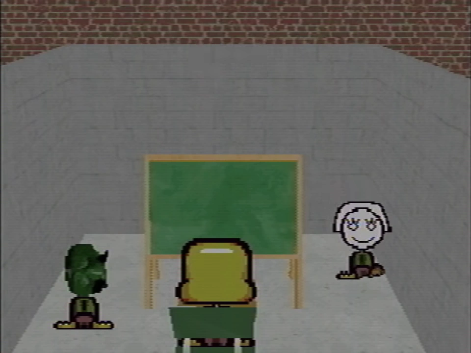
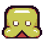
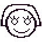
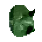
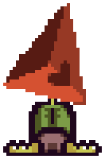
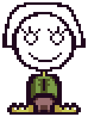
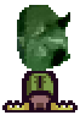

Multiple players are shown to be playing or have played Petscop.

Several players present in the same room during Petscop 15
Each player sees themselves as the default guardian, while other players are shown with different heads on their guardian bodies. This can be seen in some demo recordings with known other players, such as the entirety of Petscop 12 (played by Tiara), or the demo seen at the beginning of Petscop 14 played by Marvin.
Paul is seemingly viewed by other players as a guardian with a red triangular head, due to the sync in the beginning of Petscop 12 with Paul's movements in the Quitter's Room in Petscop 10. However, this may not be specific to Paul, and may be generally representative of the current player if they do not have a specific character. The red triangle head character is additionally used for presumed playback instances in Room Impulse until a player is focused.
| Current player | Players from Current Player’s perspective | ||
|---|---|---|---|
| Paul | Tiara | Marvin | |
| Paul |  |
 |
 |
| Tiara | |||
| Marvin | |||
In cases where multiple players are present, there are several ways in which players have been shown to communicate with one another.
During Petscop 6, Marvin was able to communicate a message to Paul by placing the letter tiles from the school, and various other tiles to depict locations mentioned within the message.
Draw Mode is used several times by Tiara as a way to communicate with Paul, namely in Petscop 7 and Petscop 23. In Petscop 15 she shows Paul how to access draw mode. It is also speculated that Tiara used Draw Mode in order to communicate through the pink tool.
Later in the series, most communication is done through P2 to TALK. Whenever a message is sent via P2 to TALK, a sound is played. This sound is unique for each of the players seen using the system. In Sound Test, these sounds are called "Marvin Message," "Belle Message" and "Care Message," for Marvin, Tiara and Paul respectively.

Fanmade recreated sprite
Paul is presumed as the player of most "live footage" shown for most of the Petscop series.
"Pall" is playing in the demo recordings shown in Petscop 11, Petscop 15, and Petscop 23 that take place in the school. "Pall" phonetically sounds the same as "Paul", which may imply that they are actually Paul playing, or trying to seem like Paul playing. It is also speculated that Marvin calling the player of these demos "Pall" is possibly addressed to Paul, as he is watching the demos.

Fanmade recreated sprite
Tiara plays in the demo recordings that make up Petscop 12. She also appears in Petscop 15 and Petscop 23 as viewed by other players.
It is possible that she is also playing whenever she appears in the Quitter's Room, though forced to mimic the movements of any player on the other side of the room.

Fanmade recreated sprite
Marvin is currently only known to have played the demo recording at the beginning of Petscop 14 and throughout the entirety of the recordings shown during Petscop 20. He otherwise appears in other gameplay on multiple occasions as viewed by other players, though his movements on these occasions are usually playbacks of his movements from recordings.
While he is playing, different rooms are accessible, while some others (which are accessible to other players) are not accessible to him. He is also able to move the camera while viewing the windmill from the tool room. Additionally, pieces do not appear for him.
{kind=link}
{kind=link}
{kind=link}
{kind=link}
{kind=link}
{kind=link}
{kind=link}
{kind=link}
{kind=link}
{kind=link}
{kind=link}
{kind=link}